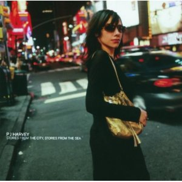
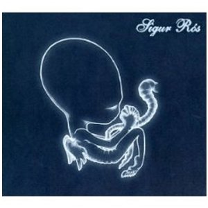

By No Ripcord Staff
We’re at the penultimate stage, and the next article will reveal our much awaited Top 20 with that all-important number 1. However, don’t neglect these records; there are some stellar and career-defining works in this selection of twenty.
40. The Streets
“Original Pirate Material”
(Locked On/679 – 2002)
Touching on the highs and lows of inner-city life with wit and verve, Mike Skinner's first release under The Streets moniker is rightfully regarded as a modern classic. The commonplace and mundane - sinking Kronenberg in the pub, fights in fish 'n chip shops and stoned N64 sessions - are brought to life with startling clarity thanks to Skinner's humorous and insightful wordplay, set to an endearing backdrop of stripped-back UK garage, ska and hip-hop. Though underpinned by a faint sense of wistful nostalgia, especially on standout track Weak Become Heroes, the overall package is an upbeat encapsulation of the minutiae of British life in the 21st century, warts and all. Gabriel Szatan
39. Outkast
“Stankonia”
(LaFace/Arista – 2002)
Bold, innovative, comprehensive, and creative, Stankonia supersized the hip-hop envelope by pushing it in all different directions at once. Duelling frontmen Andre 3000 and Big Boi incorporated drastically different genres (funk, psychedelia, metal, southern gospel, drum n’ bass) and a broad palette of artists (over thirty in all) to create a cohesive whole that somehow still reeked of Outkast. The duo’s lyrics were tight, well composed, and coated with a salacious serum of controversy that largely steered clear of stale “bitches n’ hoes” rhetoric. Best of all, Stankonia is a rare example of critically-acclaimed music, a product of talent and effort, which suitably rewarded its creators. The album peaked at number 2 on the charts and would eventually be certified quadruple-platinum. Ben Jones
38. Panda Bear
“Person Pitch”
(Paw Tracks – 2007)
Noah Lennox’s third album as Panda Bear is a sunshine record through and through, evoking the endless hot summers of childhood, but injecting the nostalgia with the necessary amount of new technique to prevent it becoming a pastiche. Where this newness has its root is in electronica and dance, specifically the repetitive loops and grooves of minimalist techno. The melding of sunshine pop melodies and harmonies with state of the art, avant-garde production techniques makes for a compelling album. Opener Comfy in Nautica sets the scene with a vocal that could have been one of Brian Wilson’s outtakes, while the album’s centrepiece is Bros, twelve minutes of blissed-out dream-pop that takes the listener on a journey in sound from classic 60s pop, through to noughties club anthems. Easily the equal to Animal Collective at their best, Person Pitch is a brilliantly constructed and written album. David Wood
37. Modest Mouse
“The Moon & Antarctica”
(Epic – 2000)
The Moon & Antarctica is that album, the Modest Mouse album that turned a quirky songwriter into a philosopher, an album that even those who hate Modest Mouse can’t help but love. The concept, a simultaneous meditation on both the individual’s and the collective’s place in the universe, is so ambitious that it should have been lost in space before it even reached the third planet that Isaac Brock sings about on the album’s opener. But The Moon & Antarctica successfully showed the expanse of both, lyrically and in the spacey production, and looked inside one individual to find the everyman. Brock may have been unsure whether it was the shorter acoustic numbers or the experimental quirky ones that would give the answers, but what’s remarkable is that The Moon & Antarctica never feels uneven. It gave us answers as universal as our questions and was versatile emotionally and musically. Forrest Cardamenis
36. Queens Of The Stone Age
“Songs For The Deaf”
(Interscope – 2002)
With star power to be found in drummer Dave Grohl, Queens Of The Stone Age released Songs For The Deaf in 2002 after turning more than a few heads with their 2000 release, Rated R. From the ashes of stoner rock progenitors Kyuss, singer/guitarist Josh Homme and bassist Nick Oliveri, along with ex-Screaming Trees singer Mark Lanegan, enlisted a who’s who of rock talent to aid in the album’s creation. Strung together by conceptualized radio bits, Songs For The Deaf spliced together metal references with garage-addled rock prowess, Homme and Oliveri’s collective penchant for repetition and riff authoring their own distinctive blend of off-kilter, at times pop-informed songwriting. Spawning singles like No One Knows and Go With The Flow, and boasting power numbers like First It Giveth and A Song For The Deaf, QOTSA crafted a perfect combination of strength and accessibility, compromising nothing as they seeped into the mainstream. Sean Caldwell
35. The xx
“xx”
(Young Turks – 2009)
The xx may have been feverishly tipped by the time xx was finally released, but curious listeners may well have initially wondered what the fuss was all about. However, given time, xx’s charms revealed themselves and provided a rewarding and fulfilling experience. It’s an extraordinarily lean record, where every element is entirely necessary and nothing is superfluous. This kind of studied minimalism could be misinterpreted as hipster catnip, but there were irresistible melodies and solid hooks underpinning these groove-driven, haunting works. This lack of bombast also improves the dynamics of the record, when The xx do bring it all back together after the breakdown – most notably towards the end of standout track Heart Skips A Beat – it’s all the more powerful. The timid trio from Putney captured the Mercury Prize and made the world fall in love with them. Fingers crossed for album number two… Joe Rivers
34. Godspeed You! Black Emperor
“Lift Your Skinny Fists Like Antennas To Heaven”
(Constellation/Kranky – 2000)
You certainly couldn't say that anarchist post-rock collective Godspeed You! Black Emperor's second album suffered from a lack of ambition. It spans an hour and a half and two discs (but only four tracks) of apocalyptic, symphonic despair. It's not a huge departure from the already well-received album and EP that preceded it, but where those smaller, impeccably formed works were almost exclusively grimy and angry, Lift Your Skinny Fists..., despite (or perhaps because of) its scale, also found time to add a touch of warmth, making room for monologuing about the decline of Coney Island and glockenspiel duets amongst the chaos. The end result marks the fairly unique occurrence of a band's foray into the tricky field of double albums proving to be its most accessible, consistently entertaining, even vital, work. Mark Davison
33. The Shins
“Chutes Too Narrow”
(Interscope – 2003)
James Mercer may have assembled a crack team of musicians for The Shins v2.0, but he'll have his work cut out trying to top his original line-up’s first two records. Sure, Oh, Inverted World has the Natalie Portman factor, but Chutes Too Narrow remains my personal favourite. Crammed full of breathtaking three minute pop songs, it’s a bright and breezy shot of pure joy. I must have heard the raucous singalong anthem So Says I a couple of hundred times and it hasn’t lost a single shred of what makes it great. When I listen to Chutes Too Narrow my mind threatens to swell with the very best memories of 2003/04; at the same time, there’s something that prevents me from wallowing in nostalgia for that era; I think it must be the songs themselves, which are simply far too engaging to permit such a level of distraction. David Coleman
32. Dizzee Rascal
“Boy In Da Corner”
(XL – 2003)
Upon its release in 2003, Boy In Da Corner heralded the arrival of an new MC who would quickly move to the forefront of British urban music. It was a grimey, claustrophobic, gritty representation of East End life told through rapid-fire raps, warped bass and frenzied beats. Exhilarating, fascinating and unnerving, the twisted grooves on Boy In Da Corner feel as if they could drown out or incorporate any of the sounds that life in modern London has to offer. With a cartoonish wit and a striking balance of machismo and vulnerability, Dizzee Rascal set himself aside from the class of 2003 and crafted one of the best urban records to have ever come out of the UK. Gary McGinley
 31. The Knife
31. The Knife“Silent Shout”
(Rabid – 2006)
Would it be overstating things to call Silent Shout a game-changer? The Dreijer siblings may have had past form in crafting both almost-hits (Heartbeats) and oddities (You Make Me Like Charity), and may have been drawing on musical forms that were already long out of favour, but the opening beats of Silent Shout's title track were still a bold announcement of something different, definitely unsettling, yet very exciting. Peppering its eleven Euro house-inspired tracks with domestic unease (Na Na Na), Whatever Happened to Baby Jane-eqsue psychodrama (Marble House) and outright loopiness (We Share Our Mother's Health), as an experience, Silent Shout is almost entirely devoid of joy. But it is chock-full of downright amazing tunes (and impressive studio-crafted widdly bits), and its influence has become very noticeable in recent years; Niki & The Dove, for example, are really just the Dreijers with a sunnier disposition. Mark Davison
30. Madvillain
“Madvillainy”
(Stones Throw – 2004)
MF DOOM and Madlib work so well together. It sounds like they had a great time recording this outstanding piece of alternative hip-hop, enjoying themselves at the same time as proving their individual brilliance. DOOM has this profound oneness with the sounds of every syllable he spits, to the point that his lyrics become cat’s cradles of rhymed and rhythmic connections, dizzying in his dextrous glossophilia. Meanwhile Madlib’s easy-going, nostalgic beats and zany cartoon samples wonderfully evoke the clouds of pot smoke that must have filled the studio. This was actually my gateway into hip-hop, and I still reckon tracks like Accordion, Meat Grinder, and All Caps are perfect instances of the genre at its most compact and endlessly-replayable, by two artists who make everyone else look sub-par. Stephen Wragg
29. Animal Collective
“Merriweather Post Pavilion”
(Domino – 2009)
Look no further than the cover art to find justification for Merriweather Post Pavilion’s inclusion – Animal Collective have wordlessly extolled its virtues right there. As the billowing optical illusion suggests, MPP is a triumph of texture. Woozy synth arpeggios cascade and splash amid galloping drumbeats and circuitous vocal rounds. The entire mass is always moving, and each track shimmers and breathes along the way. Amid the frenzy, Animal Collective manage to steer their sonic stampede through diverse and entertaining terrain. In The Flowers spends half its time gestating before blooming midway through and ultimately dying off amid a sparse instrumental landscape. MPP isn’t exactly a verse-chorus affair, and that’ll be off-putting to the Top 40 masses, but those looking for an aural experience will find few better. Ben Jones
28. PJ Harvey
“Stories From The City, Stories From The Sea”
(Island – 2000)
The year 2000 saw PJ Harvey win the Mercury Music Prize for the first time with one of her most discussed records: Stories From The City, Stories From The Sea. On this album the grit and drama of her earlier work was made more widescreen and accessible as she wrapped her low moan around a melodic set of songs exploring love’s often inextricable link to a time and, more importantly, a place – the place in question being New York. Many fans preferred the raw, sexual longing of her earlier work but this is one of those records that warrant a second look. Its vivid descriptions of Manhattan’s non-stop buzz and chaos - coupled with an obvious Patti Smith influence - result in a consistent collection of bracing beat-punk poetry and visceral alternative rock. Gary McGinley
27. Sigur Rós
“Ágætis Byrjun”
(Fat Cat – 2000)
Ágætis Byrjun sounds genuinely alien. Its otherworldly guitar, massive crescendos and enrapturing melodies make for an experience that’s unbelievably foreign, unique and, at the time, very new. After having listened Sigur Rós for over ten years, it’s hard to think back to hearing this record for the first time, but it was, and remains, truly striking in every way. The composition is incredible, dense and gorgeous. Every note and layer is meaningful. Nothing is wasted, an impressive feat for a record with so many sounds. It’s the record that launched the band into the spotlight and began a run of excellent albums. It reenergized and completely changed post-rock as a genre, creating new benchmarks for what could be done within its confines. Andrew Baer
26. Vampire Weekend
“Vampire Weekend”
(XL/DGC – 2008)
Whenever the sun is shining, this album’s like a magnet to me; I keep getting drawn to it. I end up bouncing down the street and shouting the few words I can discern on A-Punk and singing, “woah-oh-oh.” Obviously that doesn’t happen, I walk with a moody trudge, but it makes me jump around on the inside and I’m sure you all feel the same. The guitars are sweet and smiley, Ezra Koenig yaps like David Byrne’s child would and the post-punk afropop influence spurts out from all areas. Yeah, it’s samey and it’s almost annoyingly positive (even The Kids Don’t Stand A Chance is made joyous due to its tune) but that summery sound seems to overcome my cynicism and I smile like a little kid at Christmas. James McKenna
25. TV On The Radio
“Return To Cookie Mountain”
(4AD/Interscope/Touch and Go – 2006)
There’s no possible way to describe Return To Cookie Mountain in purely structural terms, other than to give it merit for how it packs an emotional wallop of freely associative ideas erected in an absolutely visceral way. There’s nary the presence of an electric guitar, yet the punching synths that dance atop a stretched out, dial tone-resembling drone have more of a presence than any superfluous across-the-fret solo could ever achieve. The vocal chants and falsetto howls, which are charged by the contrasting, yet soulful vocals of Tunde Adagimpe and Kyp Malone, communicate more than any of its frankly impenetrable lyrics could ever emote. But take it as a sound installation and you’ll begin to understand that …Cookie Mountain is all about creating a massive soundscape out of loose, odd fragments, all built around gyrating loops, contagious grooves and monophonic tones. Juan Edgardo Rodriguez
24. Radiohead
“Hail To The Thief”
(Parlophone – 2003)
It may have a relatively lowly standing in the wider Radiohead canon, but Hail To The Thief still boasts some of the strongest tracks the band have penned to date. The visceral thrills of 2+2=5 and the murk of The Gloaming sit comfortably next to tender, haunting numbers such as Scatterbrain and Sail To The Moon as the band attempted to find middle ground between their electronic explorations and more conventional song structures. Granted, some fat could be trimmed from the record, but on balance it is a richly rewarding listen from a band not even running at peak capacity. Gabriel Szatan
23. Kanye West
“The College Dropout”
(Roc-A-Fella/Def Jam – 2004)
He loves to brag about it but credit where credit's due: the man is one of the most consistently forward-thinking and downright brilliant artists of his generation. But it wasn't always destined to be this way with Ye. Though it's hard to remember a time before Mr. West dominated mainstream music, it was more an awkward shuffle into the limelight, nudged forward via some high-profile production credits that reintroduced the soul into hip-hop. And lo, this young man who doted on insecurity, inequality and intellectualism changed the game entirely, going toe-to-toe with a glut of gangsters and thugs and rendering them irrelevant in one fell swoop. With all his talk of oesophagus-bruising and hard-balling, things appear to have come full circle for Kanye. But it all started with a boy in a backpack, hacked off after being fired from The Gap; ironically, it's probably where Ja Rule is working now. Gabriel Szatan
22. The Decemberists
“Picaresque”
(Kill Rock Stars – 2005)
The Decemberists’ brand of hyper-literate folk pop isn’t for everyone, but there’s a reason they have such a loyal fanbase. You’ll either sneer at their love of arcane references, sea shanties and olde worlde folklore, or you’ll be helpless to resist their charms (and if you choose Option A, you’re really missing out). Picaresque is a real mixed bag, from the royal fanfare of The Infanta to the mournful elegy of Eli, The Barrow Boy; the Motown-ish bounce of The Sporting Life to the seafaring theatrics of The Mariner’s Revenge Song. But it all hangs together perfectly, and Colin Meloy’s enthralling storytelling solidifies his reputation as one of the most inventive lyricists of our time. Joel Stanier
21. Portishead
“Third”
(Island – 2008)
Third starts with a man reading from a Wiccan text in Portuguese and climaxes with a distant melancholic droning; its lead single was a brutal (yet brilliant, and appropriately titled) assault of noise; the closest it gets to upbeat is a brief ukulele-accompanied ditty about drowning; it's mostly a collection of Krautrock grooves, jazz drums and machine noise, held-together with Beth Gibbons' permanently-on-the-verge-of-a-breakdown voice. Perhaps there was something a bit ungracious about just how confrontational Portishead were on their long-awaited (and then some) third album, but then perhaps that's what makes it extraordinary. Considering the high esteem their previous albums are held in, and just how influential, and even how unbearably sad they were, it's a very bold claim to make that Third might be the band's bleakest, strangest, arguably even best album. It wouldn't be an inaccurate one though. Mark Davison
12 July, 2012 - 09:12 — No Ripcord Staff